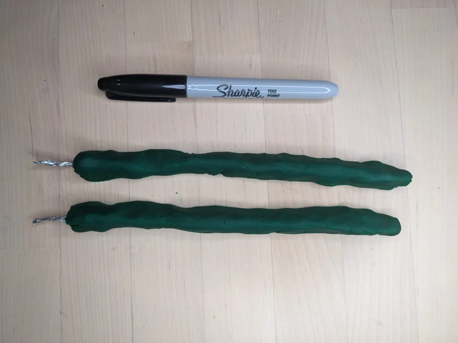
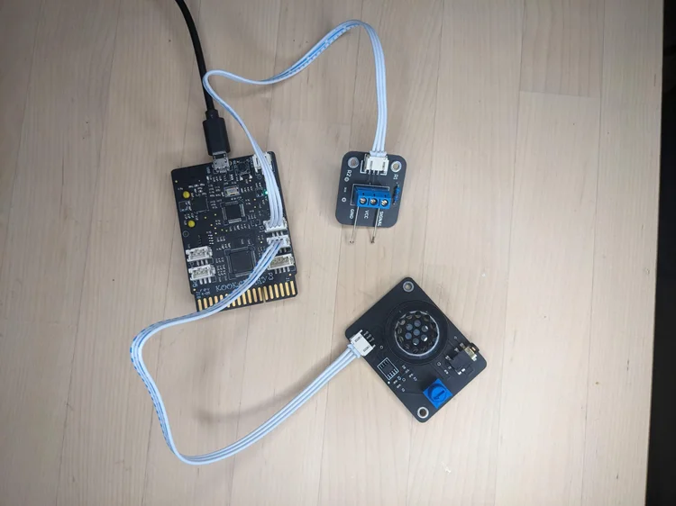
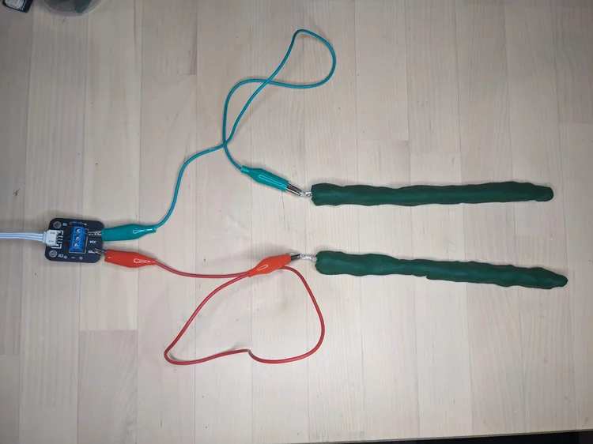
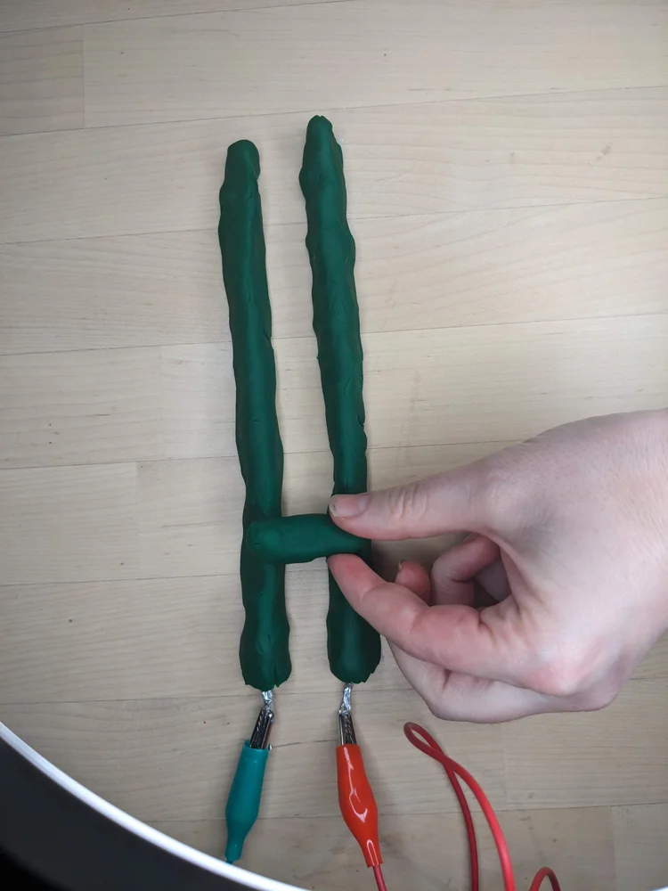
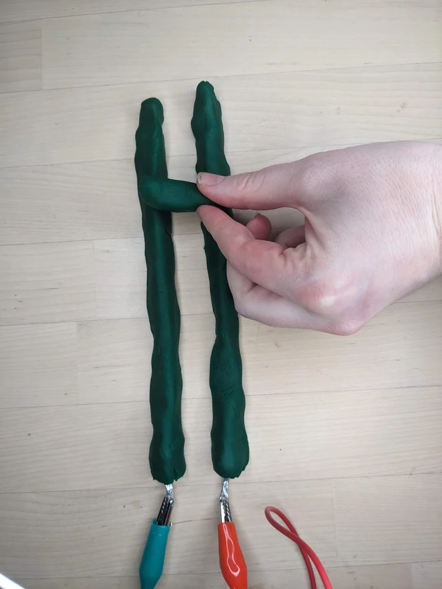
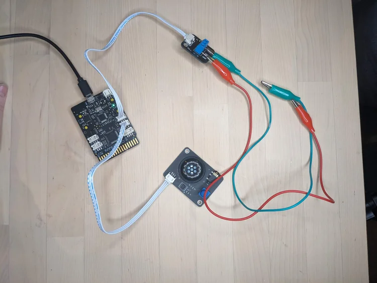
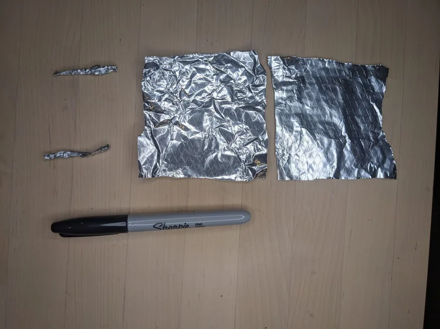

Kookaberry Xylophone Instructions
Step 1. Roll two tin-foil cylinders from foil squares. (Sharpie for scale.)

Step 2. Make two play-dough sausages, and stick the foil in the ends.

Step 3. Connect the speaker and the terminal to the Kookaberry, using the white cables.

Step 4. Attach two crocodile clips to the pins in the terminal.

Step 5. Connect the crocodile clips to the tin foil in the play-dough.

Step 6. After you've written your code, you can play your xylophone by pressing a piece of play-dough between the two sausages.


The completed playdough xylophone!